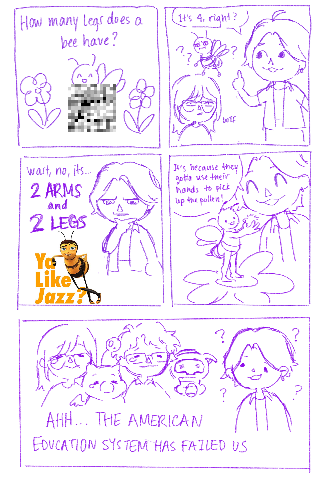
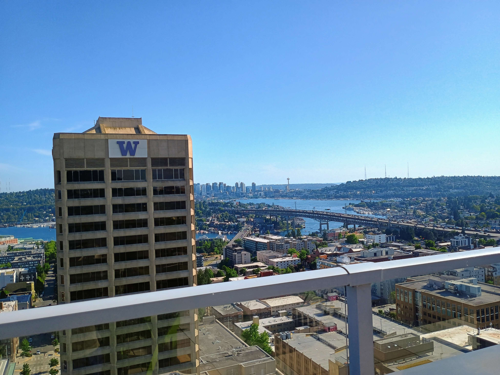
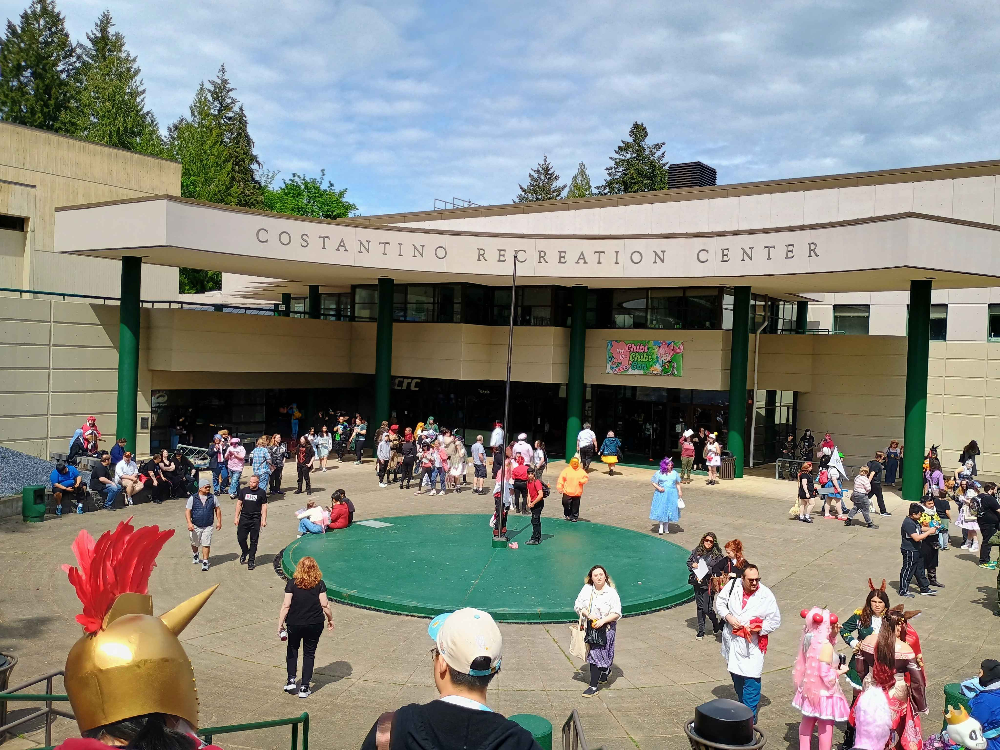
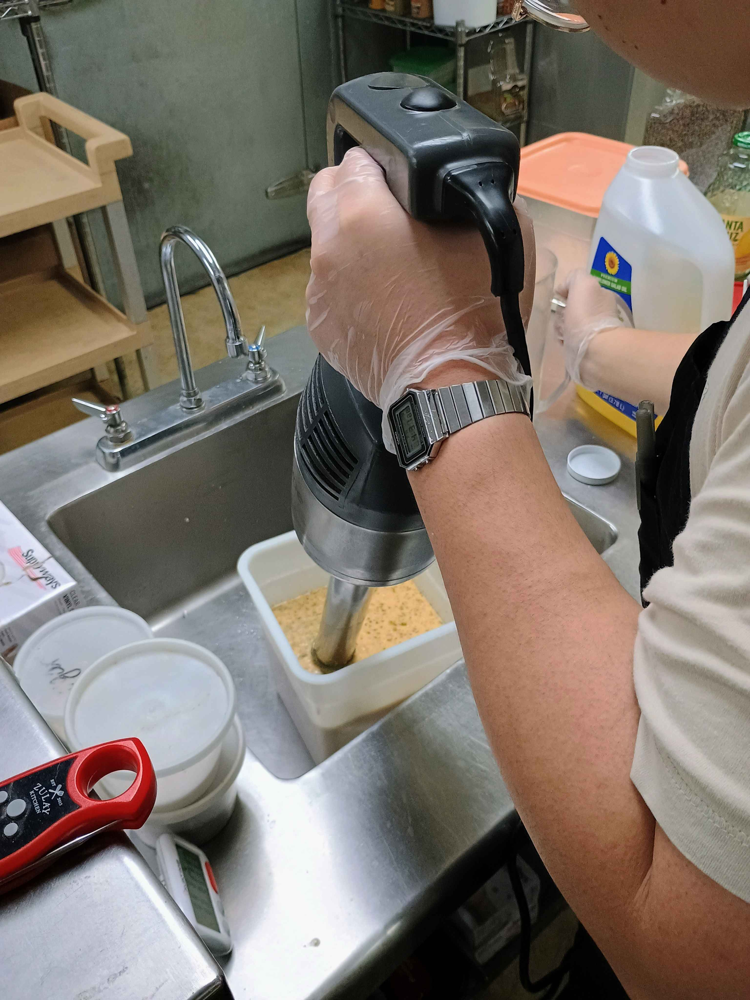
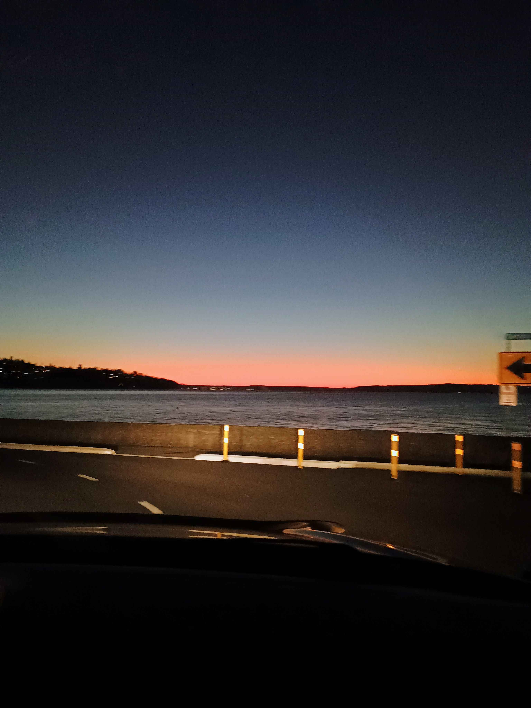

Hallow 22 year old Ryan,
This year has been quite an interesting one. A year that you didn't expect but then again, did you really expect any year to go as planned? 2025 felt similar to 2022, a transition phase that you just kind of navigated and somehow ended up in a better spot. You worried quite a bit about where you were going. You worried you were going to lose a majority of your community. You worried if life was going to revert back to being monochromatic.
To reassure you: there is still vibrancy.
A lot of things happened over the course of the year but there were particular moments that really defined it. Moments that influenced your thoughts and making you more of a whole person.
So here are the catalyst events of 2025 that made life wonderful this year.
Missing Pieces, Flawed Mangoes
At the beginning of the year I got the opportunity know more about D and through her I joined "The Overwatch Crew."
Just a bunch of people from all around the world that like and play Overwatch. A game I thought I would never touch but now something I have fun playing and appreciate. I felt nervous at first joining this group because so many people were so good at the game! Before this I was just playing Valorant and forgot what being a beginner felt like. However thanks to all the patient and kind people in the group I really got to enjoy the learning process of the game and became decent at a role that I would never choose in any other game, TANK?!?!?!
What really surprised me though is getting know people in this group. I got to hear a variety of different stories of not only just why they like playing Overwatch but also who they are as a person. After hearing so many I realized these are the wackiest people I came across but in a cool way. They have such different lived experiences and I'm excited to learn even more because I think I only scraped the surface. They have helped expand my perspective on empathy and gave me a direction to what I want in life.
Another thing is that since this is an online friend group, I actually got closer to the people that are local to me. So weird how the world works.
 Credits to a doorI graduated!
It's been an absolute pleasure to study and live at UW for the past 3 years. I got to meet so many people and call some my life long friends. Sure college gave me some education but it turned me into a person.
It all started with Wushu when I was at my heaviest. All that cardio and sticking to it slimmed me down so much that high school me would not recognize. Along the journey I endured the struggle with other unfit friends and eventually they became my Wushu family. I did 1 year of taiko and that gave another physical/creative outlet to explore. These guys were so wholesome and I'm glad I got to participate in their 10 year anniversary where I also got to meet some of the older generation of Taiko peeps. I also met people from other universities that I get to game with, s/o to Hidaka. Informatics taught me the intersection of information systems and human values. How can I help bring the world together by harnessing the power of technology? One example is Wordplay: an accessible, language-inclusive programming language for all. This is where I met D, a friend that I got closer with by playing Valorant and hitting the gym.
Thank you to University of Washington, iSchool, Husky Wushu, and Taiko Kai for being a part of my adventure.
Oh god this part is hard for me write lols.
2 firsts out of many I did this year was Chibi Chibi Con and harvesting clams. The people that were involved were D, M, L, and A. These guys are also part of the Overwatch Crew and that is how I met them in the first place. At first I was really hesitant to go with them to Chibi Chibi just because I still didn't know them that well but I'm glad past me accepted.
That convention was really fun, seeing the local artists, have it hosted at a college, the event being student ran, just overall cozy. This is where I got the surprise appearance of Soup and figured out we have mutuals lololol. It was fun being around this group because I don't know how else to put it, they are just them?
I went on another trip with to gather clams with expert L. We got to enjoy the seaside nature and enjoy some good burgers. I got to show D, M, and A my dad's garden in all of it's glory. It is so beautiful and it led me to creating the flora page
What happened with both of these trips is that when I got home negative feels started to arise. I've felt this in the past but I noticed something different. I actually felt happy a little while later, and it was kind of weird.
Then I realized: I was happy and content because I got the privilege to miss people I care about.
Work became a something I really enjoyed. I joined as a Frontline Gastronomic Solutions Associate – Deli & Beverage Division.
During the summer I got really bored so I decided to get a job at the end of summer/beginning of fall. I love the desserts of this place and I get to have fun with my coworkers, especially my really bald boss. Everyday I get to ask myself "How can I get a little better today?" That usually comes down to prepping food quickly or making sandwiches at a faster rate. With that mentality I bring it outside of work because for me the 2 work in tandem. I got closer with S which is my middle school friend and I appreciate him even more because watching him work makes me want to work even harder.
Will I stay at the place for long? I don't know. What I do know is that it is a good starting point.
In only a couple hours 2026 rolls around. I just ate so much this week but I think thats a good sign. I really really liked 2025 a lot.
Moving forward:
- Continue to have a deep appreciation for the world around and our brief time within it.
- I hope you continue to hold a great capacity and care for my friends.
- I hope you continue to take paratelic actions.
- I hope you continue to use some time to understand yourself.
"Maybe you should just stop trying to be someone else. You are a failure and that's ok. You are what you are. People already see through you. There's no point in trying to filter yourself."
Kindly,
Your present self 